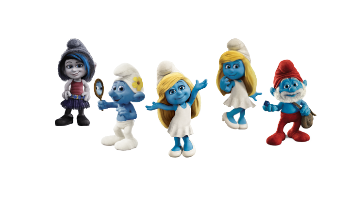

Aquib helps me to swing

Aquib helps me to swing
Papa Smurf's duty is to ensure that all the Smurfs of the village get along and respect each other. When real chaos arises, Papa Smurf often use of magic to save smurfs.
Vexy is a female mischievious being that was grey along with Hackus, she wants to find Smurfette to spend the time with her as sister with the help of her brother Hackus.
Clumsy doesn't really have a job. He does help out whenever the Smurfs are building or fixing something, but there are times this could end up with big trouble.
He is Smurfette and Vexy's brother who originally was a Naughty created by Gargamel to serve him and his evil purposes,HE is not very bright.

Brainy Smurf considers himself the most intelligent Smurf in the village and an expert on everything, although his actual knowledge is questionable at best.

Smurfette was magically created from clay by the Smurfs' enemy, Gargamel, so that she would use her charms to cause jealousy and competition among the Smurfs.
He directs a bakery shop and provides fresh bread for the Smurfs. He wears an apron and a baker's hat. He is always making cakes, cookies and other goodies.
Melody is a musical female Smurf who is one of the group of Smurfettes. She loves to sing a song for her heart of melody.
She is the female counterpart of Hefty Smurf who acted as defender of a group of Smurfettes in her own village located in the Forbidden Forest.
Gutsy Smurf is a brave, noble Smurf, He is one of the few Smurfs that travel through time to New York City and help the Smurfs.
Grouchy Smurf is the misanthropic grouch of the Smurf village. His catchphrase is "I hate (something somebody else mentions)".
Why we're different
If you have older children, they can share stories with your younger children, or you can all read together.
Liza
House Wife
I am a school teacher and i love to share smurf's story with students. They reaction are really memorable.
Maria Grace
School Teacher
FIND US ON SOCIAL MEDIA
Verified Official
Developer Aquib Haque
Profile Original & Official®
CONTACT US
The Cursed Land, Dreamland
+91 7001780183
aquib.haque19@gmail.com
SUBSCRIBE NEWSLETTER
© Website Crafted by Aquib Haque